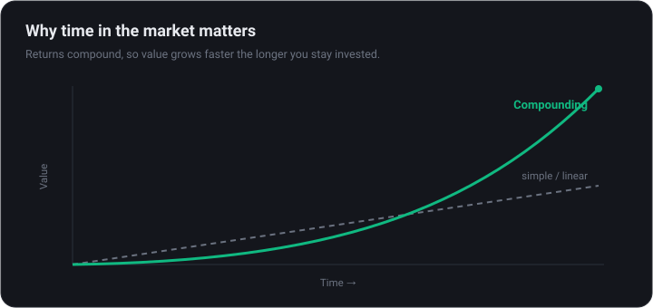
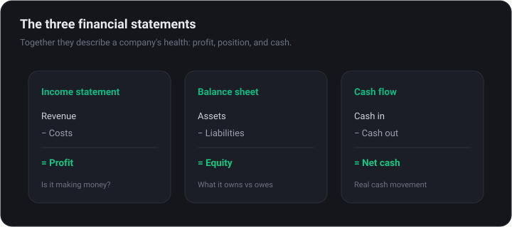

Stock Investing Foundations
Start investing in stocks with confidence — how the market works, opening a brokerage, screening for ideas, reading the fundamentals, valuing a company, and building a durable portfolio.
How the stock market works
A share is part-ownership of a real business. When the company grows and earns, owners benefit through rising share prices and sometimes dividends. Shares trade on exchanges (NYSE, Nasdaq) during market hours.
Indices like the S&P 500 track baskets of companies and act as the market’s scoreboard. Historically, broad stock indices have returned roughly 7–10% a year on average over long periods — with plenty of scary drops along the way. Time in the market beats timing the market.

Index funds & ETFs: the default that beats most pros
Before picking a single stock, understand the option that quietly beats most professionals: buying the whole market. An index fund holds every company in an index, like the S&P 500, in one low-cost package.
- Diversification by default — one purchase spreads your money across hundreds of companies, so no single failure sinks you.
- Low cost — broad index funds charge tiny expense ratios, often under 0.1%. Fees compound against you, so low is powerful.
- ETFs vs mutual funds — exchange-traded funds trade like a stock all day; mutual funds settle once daily. Both can track the same index.
- Hard to beat — over long periods, low-cost index funds outperform the majority of active managers after fees.
For most people a couple of broad index funds is not a starter portfolio to graduate from — it is a perfectly good destination. Individual stocks can be the satellite around that core, not the foundation.
If you do nothing else, a low-cost, broad-market index fund bought regularly for decades is a genuinely excellent plan. Complexity is optional; consistency is not.
Beyond stocks: bonds, cash & asset allocation
Stocks are the growth engine of a portfolio, but they are not the whole machine. Asset allocation — how you split money across asset types — drives most of your long-run results and, just as importantly, how well you sleep.
- Stocks — the highest long-term return, but the wildest ride. The core of a long-horizon portfolio.
- Bonds — loans to governments or companies that pay interest. Lower return, but they steady the portfolio and often hold up when stocks fall.
- Cash & equivalents — money-market funds and savings. Safe and liquid, but loses ground to inflation over time.
- Real assets — property, commodities and the like, sometimes added for diversification and inflation protection.
A classic rule of thumb shifts more toward bonds as you near the date you need the money, and more toward stocks when your horizon is long. The exact mix is personal — it depends on your timeline and how much volatility you can genuinely stomach.
Decide your stock/bond split first; it matters more than any individual stock you will ever pick. Then rebalance back to it about once a year so winners do not quietly take over the whole portfolio.
Open a brokerage account
You buy stocks through a broker. When choosing one, weigh:
- Costs — most major brokers now offer commission-free stock trades; watch for other fees.
- Account type — a regular taxable account vs. tax-advantaged retirement accounts (IRA/401(k) in the US, ISA/pension elsewhere).
- Safety & tools — pick a regulated, insured broker with research and screening built in.
Max out tax-advantaged accounts before taxable investing where you can — the tax savings compound enormously over decades.
Accounts & taxes: keep more of what you earn
Where you hold investments can matter as much as what you hold. Tax-advantaged accounts and a little awareness of how gains are taxed can add up to a fortune over a lifetime.
- Tax-advantaged accounts — retirement and savings wrappers (IRA and 401(k) in the US, ISA and pension in the UK, and equivalents elsewhere) let investments grow with tax deferred or removed.
- Long vs short-term gains — in many countries, assets held over a year are taxed more lightly than quick trades. Patience is literally rewarded.
- Dividends are taxable — in a taxable account, dividends are usually taxed in the year you receive them, even when reinvested.
- Tax-loss harvesting — selling a loser to offset gains can lower your bill, subject to wash-sale rules that disallow rebuying the same asset too quickly.
The order that helps most people: capture any employer match, then fill tax-advantaged accounts, then invest in a regular taxable account. The match and the tax savings are returns you do not have to pick a single stock to earn.
Tax rules vary by country and change over time. This is general education, not tax advice — check your local rules or a professional for your own situation.
Find ideas with a screener
A screener filters thousands of stocks down to the few that fit your criteria — by size, sector, valuation, growth, dividend, and more. It turns 'where do I even start?' into a focused shortlist.
Common starter filters: market cap (stick to larger, established companies while learning), profitability, reasonable debt, and a valuation that is not extreme.
Read the fundamentals
Fundamental analysis is reading a company's financials to judge health and value. Three statements tell the story:
- Income statement — revenue, costs, and profit. Is the business growing and actually making money?
- Balance sheet — what it owns vs. what it owes. Too much debt is fragility.
- Cash flow statement — the real cash moving in and out; harder to fudge than 'earnings'.

A few ratios summarize a lot: P/E (price vs. earnings), profit margins (efficiency), ROE (return on equity), and debt-to-equity (leverage). Always compare to the company’s own history and its peers.
A valuation toolkit: multiples & intrinsic value
Valuation answers one question: am I paying a sensible price for what this business earns? You do not need a perfect model — just a feel for whether a stock is cheap, fair, or priced for perfection.
- P/E ratio — price divided by earnings per share, a quick read on how many years of current profit you are paying for. Compare forward (estimated) and trailing (past) versions.
- PEG — P/E divided by growth. It contextualises a high P/E: a fast grower can deserve one, a stagnant company cannot.
- EV/EBITDA & P/S — enterprise-value and sales-based multiples, useful when earnings are thin or distorted.
- P/B — price to book value, more relevant for banks and asset-heavy businesses.
- Discounted cash flow (DCF) — estimates intrinsic value from future cash flows discounted to today. Powerful in theory, only as good as its assumptions.
Multiples only mean something in comparison — against the company's own history and its peers. A P/E of 30 is cheap in one industry and expensive in another.
Recommended toolGuruFocusValuation multiples, historical ranges and a proprietary fair-value estimate.Open ↗Buy with a margin of safety — a gap between the price you pay and your estimate of value. It is your buffer for being wrong, which you regularly will be.
Valuation & deeper research
Price and value are not the same thing. Valuation asks: what is this business actually worth, and am I overpaying? Beginners do not need a perfect model — just a sense of whether a stock is cheap, fair, or priced for perfection relative to its growth and peers.
- Look for a durable competitive advantage ('moat') — pricing power, network effects, switching costs.
- Read the primary source: a company’s own filings beat any hot take.
- Use independent ratings and fair-value estimates as a second opinion, not gospel.
Risk, volatility & your time horizon
Risk and volatility are not the same thing. Volatility is how much a price bounces around; risk is the chance of a permanent loss of capital. Confusing the two makes investors sell good assets at the worst possible time.
- Drawdowns are normal — broad markets routinely fall 10–20%, and occasionally 50%. Long-term returns are the reward for sitting through them.
- Time horizon changes everything — money you need next year should not be in stocks; money you will not touch for a decade can ride out the swings.
- Diversification reduces risk — spreading across companies, sectors and sometimes bonds smooths the ride without giving up much return.
- Correlation matters — assets that fall together do not diversify. The point is owning things that do not all crash at once.
Match your investments to when you need the money, and accept volatility as the price of admission for long-term growth. The investor who stays calm through a 30% drop usually beats the one who can pick stocks but panics.
Your biggest risk is rarely the market — it is being forced, or scared, into selling at the bottom. Plan your time horizon so you never have to.
Dividends & the power of reinvesting
Some companies return cash to shareholders as dividends. They are not free money — the share price adjusts when one is paid — but reinvested over time they become a major engine of total return.
- Dividend yield — annual dividend divided by share price. A very high yield can signal a stressed company, not a bargain.
- Payout ratio — the share of earnings paid out. Too high and the dividend may be unsustainable.
- Total return — price gains plus dividends. Over decades, reinvested dividends have driven a large share of the stock market's total return.
- Dividend growth — a steadily rising dividend can matter more than a high starting yield, signalling a healthy, compounding business.
Turning on automatic reinvestment — a DRIP — quietly buys more shares with every payout, compounding your ownership without any effort or timing.
Reinvested dividends are compounding in its purest form: income buying more income. Given enough time, the effect is genuinely hard to overstate.
Behavioural mistakes that quietly cost you
Decades of research point to an awkward truth: the average investor underperforms the very funds they own, because of how they behave. The gap between the two is sometimes called the behaviour gap.
- Performance chasing — pouring money into whatever just went up, and buying high as a result.
- Panic selling — crystallising losses at the bottom because a drop feels unbearable.
- Overtrading — frequent buying and selling that racks up costs and taxes and usually trails simply holding.
- Home bias & anchoring — over-weighting familiar companies, or fixating on the price you paid instead of the value today.
- Overconfidence — mistaking a bull market for skill and taking ever-bigger risks.
The defences are unglamorous and they work: a written plan, automatic regular investing, broad diversification, and doing less, not more. Temperament beats intelligence in investing.
You are the biggest variable in your returns. Build simple rules that protect you from your own worst instincts, then let time and compounding do the heavy lifting.
The big picture: cycles, inflation & rates
Individual companies do not trade in a vacuum — they ride a larger economic tide. You do not need to forecast the economy, but understanding a few forces explains why markets behave the way they do.
- The business cycle — economies expand and contract in roughly repeating phases, and different sectors tend to lead in each one.
- Inflation — rising prices erode the value of future cash, and high inflation pressures both consumers and company margins.
- Interest rates — set largely by central banks, they are the gravity of markets: higher rates make safe bonds more attractive and make distant future profits worth less today, which pressures richly valued stocks.
- Growth & employment — broad gauges, like GDP and the jobs market, of whether the economy is speeding up or slowing down.
The takeaway is not to trade every data release. It is to understand the weather you are investing in — why fast-growing stocks can fall as rates rise, or why defensive sectors hold up in a slowdown.
For long-term investors, the cycle is a reason to stay diversified and consistent — not a reason to jump in and out trying to time it.
Build a portfolio, avoid the mistakes
Picking winners matters less than behaving well over time. The fundamentals of a durable portfolio:
- Diversify — across companies and sectors, so no single bet can sink you.
- Think in years, not days — compounding needs time; frequent trading usually underperforms.
- Dollar-cost average — invest steadily regardless of headlines.
- Index funds are a legitimate default — low-cost broad index funds beat most active investors, including most professionals.
The biggest risk to your returns is usually your own behavior — panic-selling lows and euphoria-buying highs. A simple written plan is the best defense.
Educational content, not financial advice. Do your own research and consider a licensed advisor for your situation.